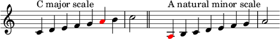
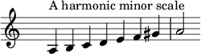
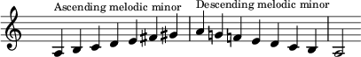

Minor Scales
In music theory, the term minor scale is more complicated than the term major scale because it generally refers to three scale formations – the natural minor scale (or Aeolian mode), the harmonic minor scale, and the melodic minor scale (ascending or descending) – rather than just one as with the major scale.
Natural Minor Scales
A natural minor scale (or Aeolian mode) is a diatonic scale that is built by starting on the 6th degree of its relative major scale. For instance, the A natural minor scale can be built by starting on the 6th degree of the C major scale:
The sequence of intervals between the notes of a natural minor scale is:
whole half whole whole half whole wholewhere "whole" stands for a whole tone, and "half" stands for a semitone.
Harmonic Minor Scales
The harmonic minor scale (or Aeolian ♯7 scale) has the same notes as the natural minor scale except that the 7th degree is raised by one semitone, creating an augmented second between the 6th and 7th degrees.
Melodic Minor Scales
To convert a natural minor scale into melodic minor, raise both the sixth and seventh notes by a half step. Usually, melodic minor is used only when ascending. When descending, composers prefer to use the natural minor scale.
